01 · INTRODUCTION
Overview
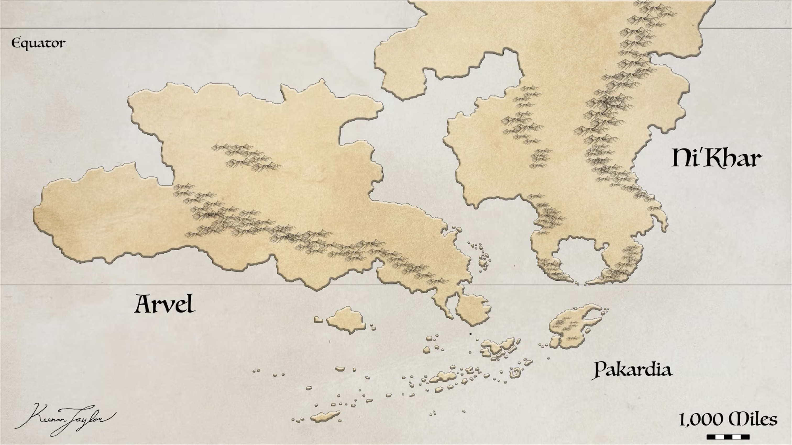
The Known World is the most extensively studied and densely inhabited region of Kaimere. Occupying a territory approximately comparable in area to the continental United States, it encompasses Arvel, the region of Ni'Khar south of the equator, Pakardia, and the Khalin Islands extending to the southwest. Although these regions differ considerably in their geology, climates, vegetation, and animal communities, they are united by their proximity to the Portal, the relative accessibility of their coastlines and waterways, and the comparatively favorable conditions they offer for permanent human settlement.
Kaimere is a distant planet whose multicellular life is overwhelmingly descended from organisms harvested from Earth. Its indigenous organisms are principally microscopic, consisting of enormous populations of microorganisms collectively known to its inhabitants as magic. These organisms periodically harvest terrestrial life from Earth, reproduce the collected organisms on Kaimere, and release them into the planet's ecosystems, where they evolve independently under unfamiliar climatic and ecological conditions. The result is a biosphere composed of successive introductions of Earth-derived plants, animals, and microorganisms, many of which have undergone substantial diversification since their arrival.
The absence of the asteroid impact that concluded Earth's Cretaceous Period approximately 66 million years ago has had profound consequences for Kaimere's evolutionary history. Dinosaurs never experienced the same global extinction on Kaimere and remain the dominant and most abundant large terrestrial animals across much of the planet. Nevertheless, the repeated introduction of more recent Cenozoic organisms has produced increasingly diverse mammalian communities. Mammals have been particularly successful in the Known World, where their evolutionary histories have been shaped by repeated introductions, extensive ecological competition, and the presence of humans.
Kaimerans are among the most consequential of these mammals. Their settlements, agriculture, trade networks, and political institutions have transformed the landscape, making the Known World the principal center of human civilization on the planet. Their concentration here is not coincidental. Compared with the dangerous and often unforgiving environments beyond its boundaries, the Known World offers relatively dependable water, more navigable seas, favorable agricultural conditions, and a comparatively manageable distribution of dangerous megafauna.
These advantages are particularly important to Kaimeran physiology. Their hereditary magic produces an unusually prolonged lifespan and slow development, but it also sustains an enchanted metabolism that requires approximately twice the caloric intake of an ordinary human with an equivalent lifestyle. Their agricultural crops are also sensitive to soil conditions and require carefully maintained growing environments. A civilization dependent upon substantial and consistent agricultural production therefore benefits enormously from the Known World's comparatively productive and cultivated landscapes.
The Known World is not, however, a uniformly safe or environmentally stable region. Its ecosystems are among the most diverse and competitive on Kaimere, its boundaries are exposed to formidable weather systems, and enormous animals continue to dominate much of its wilderness. Its relative security is a consequence of geography and climatic circulation rather than an absence of natural dangers. It is a region in which the environmental conditions necessary for large human populations coincide with an exceptionally complex and competitive biosphere.
At the center of this region lies the Trakaiam Sea, an extensive shallow inland sea that forms the geographical, ecological, and economic heart of the Known World. Its waters connect several of the major inhabited regions, moderate the surrounding climate, support immense marine productivity, and provide one of the most important avenues of transportation on Kaimere. The relationship between this sea, the surrounding continental landmasses, and the atmospheric circulation of the planet is fundamental to understanding why the Known World developed into the principal center of Kaimeran civilization.
02 · Landscape and Biomes
Geographic Extent and Regional Composition
The Known World is a biogeographical and cultural region rather than a continent or political territory. Its boundaries do not correspond precisely to the limits of individual states, cultural groups, or natural geological divisions. Instead, the term describes the portion of Kaimere historically associated with the Great Portal's ecological influence and the concentration of human settlement around it.
Its principal landmasses are Arvel, southern Ni'Khar, and Pakardia, together with the islands and archipelagos of the southwestern interior seas. These regions are separated by mountains, peninsulas, shallow marine channels, and the broad expanse of the Trakaiam Sea. Their proximity allows comparatively frequent exchange of people, goods, organisms, and cultural influences, although certain geographical barriers have preserved substantial regional differences.
Arvel forms the western continental component of the Known World. The continent is exceptionally extensive, and the portion included within the Known World is predominantly its eastern side. Its environmental diversity is considerable, encompassing humid tropical forests, open-canopy woodlands, seasonal grasslands, arid steppes, and the mountainous environments of the Arvelith Highlands. The eastern regions receive warm, moisture-bearing winds and support some of the planet's most productive terrestrial ecosystems. Farther west, increasingly arid conditions lead into the extensive desert systems of western Arvel. The Arvelith Highlands are among the most important geographical features of the continent. Their considerable elevation creates a major climatic divide, altering the movement of atmospheric moisture and producing substantial differences between their windward and leeward environments. The highlands also contribute to the formation of rivers and seasonal wetlands that sustain the lowlands of eastern, northern, and central Arvel. They are simultaneously a significant ecological barrier and a source of environmental productivity.
Ni'Khar forms the northern and northeastern portion of the Known World. Only its southern regions are included within the principal area of human settlement and exploration. The continent possesses extensive tropical and subtropical environments, including humid jungles, seasonal woodlands, grasslands, and wetlands. Its Silverback Mountain range system and the openings between them influence the penetration of moist atmospheric currents into the interior. These geographical features produce pronounced seasonal variations in rainfall and support extensive wetlands. The northern and western jungles of Ni'Khar remain among the least thoroughly documented parts of the Known World. Their dense vegetation, difficult terrain, and dangerous fauna have restricted exploration, while the enormous diversity of their ecosystems has complicated biological surveys. Despite their proximity to established regions of settlement, substantial areas remain poorly understood.
Pakardia forms the southeastern portion of the Known World. It is the easternmost emergent remnant of the Pakardio-Khalin plate, having separated from Kaishel approximately 40 million years ago. Its geography is dominated by peninsulas, highlands, lakes, and extensive coastal environments. Pakardia is particularly notable for its temperate forests, which differ considerably from the predominantly tropical and subtropical environments of Arvel and Ni'Khar. The southern coast of Pakardia experiences comparatively dry conditions, while the northern peninsula and highland regions receive more dependable precipitation. Its large lakes and mountain systems contribute to the stability of its hydrology, supporting extensive forests and freshwater ecosystems. The Pakardiant Confederacy is concentrated principally in the more accessible lowlands, although much of the highland interior remains difficult to explore.
Southwest of the principal continental regions lies an extensive Khalin archipelago. Its islands occupy a range of climatic conditions, from humid subtropical environments to Mediterranean-like landscapes and more temperate maritime regions. The surrounding waters support substantial marine resources, while the islands themselves provide important agricultural and ecological environments. Their location between the major landmasses makes them particularly significant to regional maritime networks. Although these areas are often discussed collectively, the Known World should not be understood as a uniform ecological province. Its diversity results partly from the juxtaposition of different continental environments, climatic regimes, and marine systems within a relatively confined region. Its boundaries contain an unusually broad range of terrestrial and aquatic habitats, giving it a concentration of biological diversity unmatched elsewhere on Kaimere.
03 · The Inland Sea
The Trakaiam Sea
At the geographical center of the Known World is the Trakaiam Sea, also known as the Inland Sea. Spanning approximately two thousand miles across, it is an immense shallow marine basin surrounded by the principal inhabited regions of the Known World. Its size, bathymetry, and position within the continental geography make it one of the most important environmental features on Kaimere.
Despite its enormous dimensions, the Trakaiam Sea is comparatively shallow. Outside its deeper channels, the water column rarely exceeds several tens of meters. This limited depth allows sunlight to penetrate much of the basin, supporting extensive benthic vegetation and creating an unusually productive marine ecosystem. Unlike deep oceanic basins, in which primary productivity may be concentrated around particular coastal or upwelling regions, much of the Trakaiam Sea supports substantial biological production across its floor.
The sea is dominated by immense seagrass meadows, often referred to collectively as the Prairie Below the Waves. These meadows constitute one of the largest continuous benthic vegetated ecosystems on Kaimere. They provide feeding grounds, nursery habitats, and shelter for an extraordinary diversity of marine organisms. Their productivity supports extensive food webs and contributes to the abundance of larger animals that migrate through the basin.
The importance of the seagrass ecosystem extends beyond its immediate biological communities. Its extensive vegetation stabilizes the seafloor, influences sediment distribution, and provides a substantial foundation for the marine productivity that sustains coastal settlements. The shallow nature of the basin also allows ecological processes to operate across a broad area, making the Trakaiam Sea unusually productive relative to its depth.
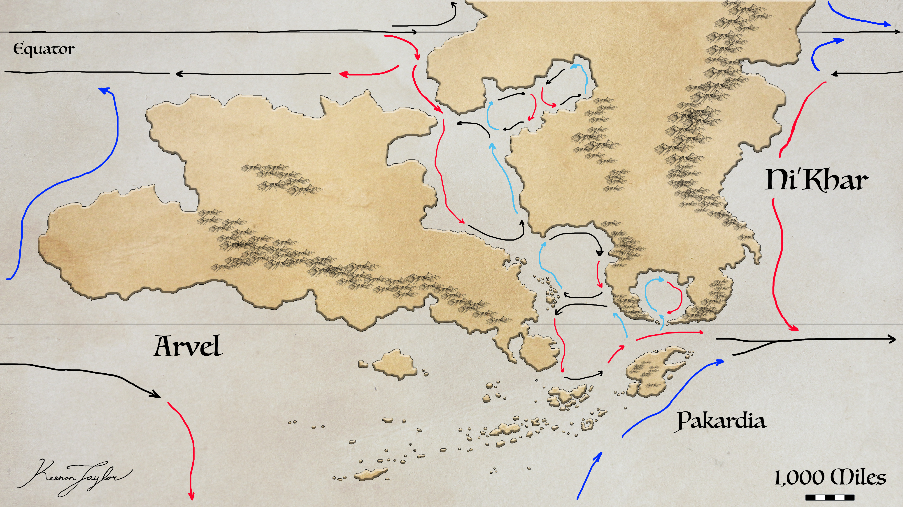
The sea receives warm tropical waters from the north, which circulate through the basin and contribute to the humid climates of its surrounding coastlines. These currents are especially important for the tropical and subtropical environments along the northern and eastern margins. The warm water supplies moisture to the lower atmosphere, supporting rainfall and sustaining coastal forests, wetlands, and seasonal woodlands.
The Trakaiam Sea is not uniformly warm throughout the year. During the summer months, offshore winds encourage the movement of surface waters away from certain coastal areas, allowing colder, nutrient-rich water from deeper regions to rise toward the surface. These seasonal upwellings are particularly important near the northern channel between Pakardia and the Free-States. The resulting influx of nutrient-rich water circulates through the Inland Sea and contributes to increased marine productivity as far as the Northern Gulf Sea.
This seasonal surge creates a major concentration of marine life. Fish and other aquatic organisms gather in response to the increased availability of nutrients, attracting larger predators and migratory animals. Coastal communities also exploit this seasonal abundance, with fisheries becoming particularly productive during the period of enhanced marine activity.
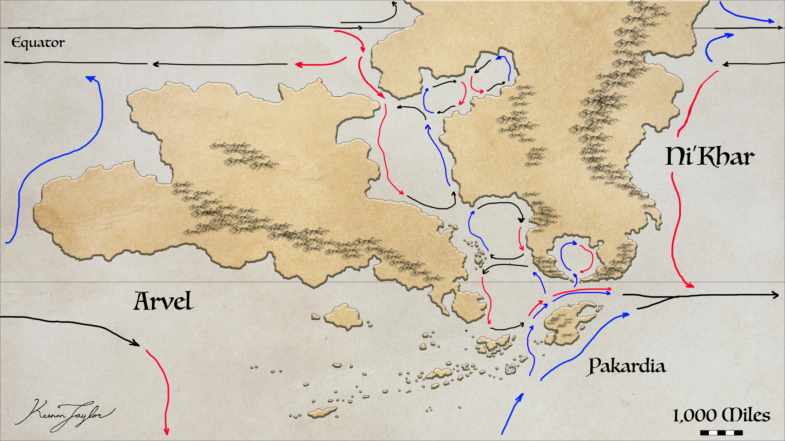
The interaction between warm tropical currents and seasonal cold-water upwelling is one of the defining characteristics of the Trakaiam Sea. Warm waters help maintain productive coastal climates throughout much of the year, while the seasonal arrival of nutrient-rich waters produces temporary increases in marine abundance. The resulting combination of stable habitat and periodic productivity supports both permanent marine populations and animals that migrate to exploit seasonal resources.
The Trakaiam Sea is also of immense economic significance. Its relative shallowness, sheltered geography, and comparatively calm waters make it one of the safest and most accessible maritime environments on Kaimere. While the surrounding oceans are exposed to powerful storms and formidable currents, the Inland Sea is comparatively protected. Its channels and coastal routes connect the major inhabited territories, making maritime transport an essential element of the Known World's economy.
For Kaimeran civilizations, the Inland Sea is consequently more than an internal body of water. It is a major ecological system, a source of food, a climatic influence, and the principal maritime corridor linking the region's different populations.
04 · Impact of the Doorway between worlds
The Portal and the Biogeographical Character of the Known World
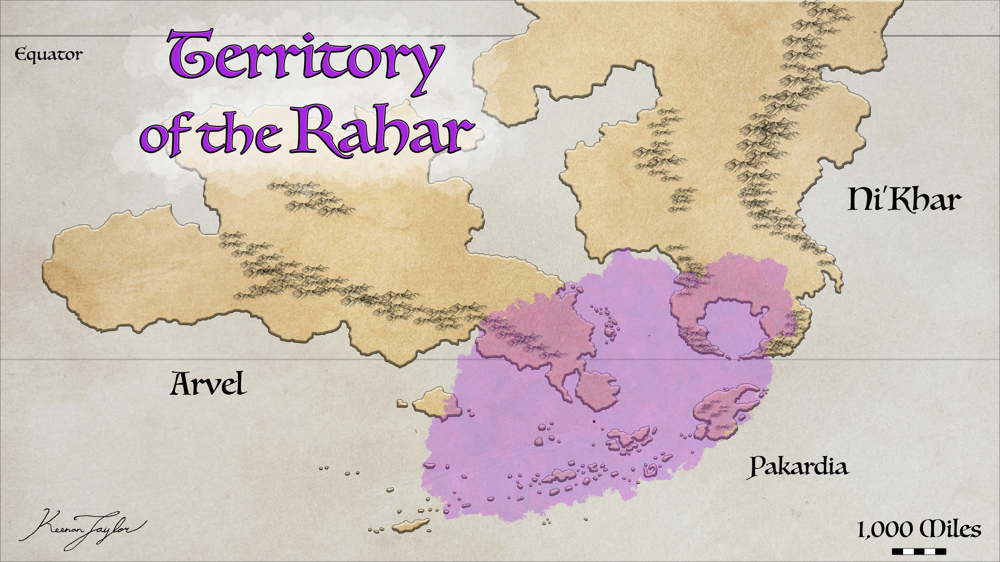
The Great Portal, known in Amanetran as the Rahar, is the principal source of the Earth-derived multicellular organisms that define the modern ecosystems of Kaimere. Although it is the most famous of the planet's indigenous microbial hives, it is not a conventional organism. It is an immense collective of native microorganisms whose activities include the harvesting, replication, and distribution of life from Earth.
Many Kaimerans regard the Portal as an elder god. Its biological functions and influence upon the planet are sufficiently extraordinary that religious and mythological interpretations have become inseparable from its historical significance. It is responsible for the repeated introductions of terrestrial organisms that have shaped the evolution of Kaimere's ecosystems, and its influence has extended across millions of years.
In its natural state, the Portal appears to maintain a territory that it interprets as possessing a healthy level of biodiversity and biomass. Its movements and the extent of its range are influenced by environmental conditions, the availability of suitable territory, and the presence of other powerful indigenous hives. The present geographical distribution is generally understood to represent the territory it occupied during the later Cenozoic harvests, particularly over approximately the last 15 million years.
The Portal's historical range has not remained constant. Its original territory extended between the tropics of Ni'Khar and Kairul, encompassing a substantially larger area than its modern range. During the Dynastic Extinction, however, volcanic ash and associated environmental disruption severely affected its activity. Much of its former territory became unsuitable, forcing the Portal to shift its range southward.
Its movements may also be constrained by other powerful concentrations of indigenous magic. The Üshalek, east of the Silverback Mountains, is considered the most formidable of these hives aside from the Portal itself. It is generally believed that the Portal's territory avoided the Üshalek during the Tyrant Dynasty and continued to remain south of the forest's domain as its range shifted. Other entities are reputed to inhabit the Arvelith Highlands and the forests and deserts of western Ni'Khar. Their influence may represent additional limits upon the Portal's movements.
Climate has also played an important role in determining the Portal's distribution. Its range generally contracts during warmer and more humid periods, when abundant vegetation and favorable environmental conditions reduce the territory necessary to sustain its ecological objectives. During more arid periods, the Portal has expanded farther in search of suitable environments and the biological productivity required to maintain its preferred level of biodiversity.
The present range broadly corresponds with the Known World, but this relationship should not be interpreted as evidence that the Portal follows human political boundaries. Its movements are not determined by the borders of states, settlement networks, or cultural territories. Rather, its distribution is governed by ecological and environmental conditions. The correspondence between its range and the modern Known World is a consequence of geography and the Portal's historical movements, not a deliberate association with Kaimeran civilization.
The Great Portal currently occupies Kabarahar, the Portal City, just northwest of the Free-States. Its presence is associated with the Whistling Door, a device through which the First Children imprisoned the Portal during their reign, approximately 14,000 to 10,000 years ago. The device continues to contain the entity, preventing it from moving and operating in the same manner as it did in its natural state.
The Portal's importance to the Known World is not limited to the organisms it introduces. Its ecological influence appears to contribute to the productivity of the regions within its historical range. The repeated introduction of new flora and fauna has created complex ecosystems with substantial biomass and extensive biological interactions. The decomposition of organic matter, vegetation turnover, and accumulation of biological material contribute to the development of soils that have become particularly favorable to agriculture over thousands of years of cultivation.
The Portal's influence should therefore be understood as biogeographical rather than political. It has helped establish the ecological conditions that support the Known World's unusually productive environments, but it does not directly determine where Kaimerans establish cities or which political institutions develop within its territory.
05 · Tropic and Temperate Climate Zones
Atmospheric Circulation and Climatic Position
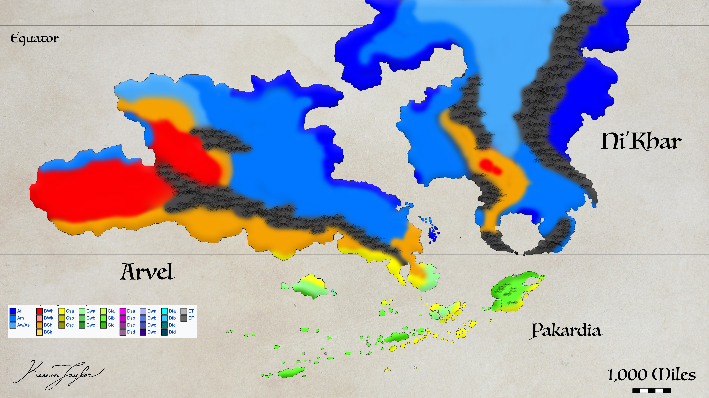
The climate of the Known World is strongly influenced by its position between the equatorial tropics and the southern subtropical high-pressure belt. The equator lies considerably to the north of the principal inhabited regions, while the subtropical high crosses the southern portion of the Known World, particularly southern Arvel, the Trakaiam Sea, the mouth of the Crescent Sea, and the waters extending toward the Abyss.
Although Kaimere is substantially larger than Earth, the basic principles governing atmospheric circulation remain comparable. The planet's rotation, axial tilt, continental arrangement, and distribution of oceans determine the broad movements of its atmosphere. The size and shape of its landmasses, together with the circulation of warm and cold ocean currents, modify these global patterns and produce the regional climates observed within the Known World.
The subtropical high-pressure belt is particularly important. These regions are characterized by descending atmospheric air and comparatively weak surface winds. The term horse latitudes is historically associated with these belts because sailing vessels could become stranded in areas of stagnant wind. In the Known World, the subtropical high influences the movement and direction of prevailing winds, helping to establish the relatively sheltered conditions that distinguish the Inland Sea from the more exposed surrounding oceans.
The relationship between this high-pressure belt and the equatorial trade winds determines the broad climatic gradients of the region. Winds moving away from warm tropical waters carry considerable heat and moisture inland, while winds passing over colder currents tend to deliver cooler and drier air. These differences are fundamental to the distribution of rainfall and vegetation.
Continents further modify the movement of atmospheric systems. Mountain ranges obstruct prevailing winds, encouraging precipitation on windward slopes and producing rain shadows on their opposite sides. The Arvelith Highlands are particularly important in this respect, creating major climatic differences between eastern and western Arvel. Similar effects occur in Ni'Khar, where mountain ranges like and gaps influence the movement of warm, moisture-bearing air into the interior.
Ocean currents reinforce these geographical effects. Warm currents passing near coastlines contribute to hot, humid atmospheric conditions and often support productive coastal ecosystems. Cold currents tend to cool the adjacent atmosphere and reduce the moisture available to inland environments, especially where the prevailing winds move offshore rather than carrying marine air toward the land.
The most productive habitats are generally those where warm ocean currents and onshore winds coincide. Northwestern Arvel's Titan Gardens and the northern jungles of Ni'Khar are prominent examples. Both regions receive substantial warmth and moisture, allowing dense or highly productive vegetation to develop.
Conversely, regions influenced by cold currents and offshore winds tend to be more arid and less biologically productive. The Southern Arvelith coast, the interior of Ni'Khar, and southern Pakardia are notable examples. These regions demonstrate how the relationship between atmospheric circulation and ocean temperature can produce substantial environmental differences over comparatively short geographical distances.
The Known World therefore occupies a climatically transitional position. Its northern regions are predominantly tropical, while its southern peninsulas and islands enter cooler temperate regimes. Between these areas lie extensive seasonal landscapes whose rainfall patterns are determined by the interaction of tropical moisture, subtropical atmospheric circulation, and regional topography.
Tropical Rainforests
Tropical rainforests occur in the wetter portions of the Known World, particularly in parts of Ni'Khar and the humid northernwestern and eastern margins of the region. These habitats are characterized by dense vegetation, high species diversity, and substantial rainfall throughout much of the year. Despite their biological richness, tropical rainforest soils are often comparatively poor in nutrients. Heavy rainfall promotes the rapid decomposition and recycling of organic matter, while frequent moisture can contribute to the leaching of nutrients from exposed soils. As a result, the productivity of these forests is maintained largely through the rapid circulation of nutrients within their living vegetation and surface organic layers.
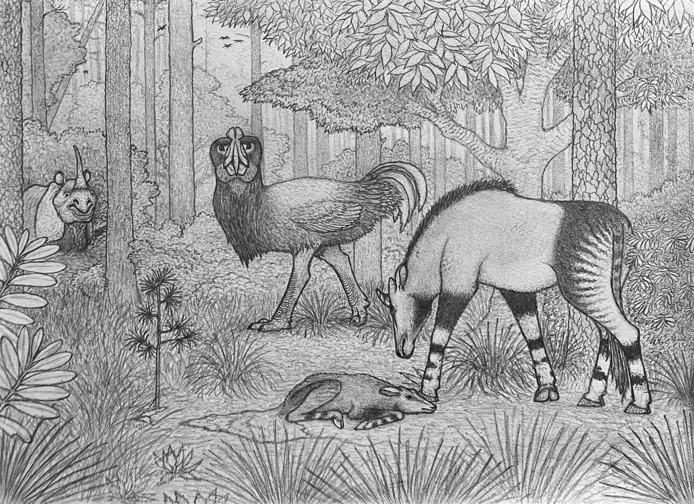
These conditions influence the distribution of large herbivores. Adult titanosaurs generally avoid the densest rainforest environments. Their considerable size and feeding requirements make confined, densely vegetated habitats less attractive than more open woodlands. The damp soils, thick undergrowth, and limited space also make these forests poorly suited to their usual feeding and movement patterns.
Juvenile titanosaurs, however, sometimes use dense forests as shelter. Their smaller size and different ecological requirements allow them to exploit these environments temporarily, although they generally do not remain there as they mature.
Tropical rainforests support particularly high diversity among smaller mammals, reptiles, snakes, and lizards. Their structural complexity creates numerous habitats and feeding opportunities, allowing organisms with specialized ecological requirements to coexist within relatively small areas. These forests consequently contain some of the most diverse terrestrial communities in the Known World.
Tropical Grasslands and Savannahs
Open tropical grasslands and savannahs are less common than might be expected given the overall warmth of the Known World. Where they occur, these environments generally support a lower diversity of plant species than the surrounding forests and seasonal woodlands.

The Houze Prairie is the most prominent grassland system of the region. The ecological character is strongly influenced by the dominance of houze grass, an exceptionally competitive plant that occupies extensive areas and restricts the establishment of many other species. This competitive dominance produces a landscape with comparatively low floral diversity despite the substantial extent of its vegetation. The Houze Prairie is not necessarily an ecosystem of low animal productivity. Its extensive vegetation provides abundant resources for large herbivores, and the open landscape supports animals adapted to seasonal variations in water availability. However, its plant communities are less diverse than those of many tropical forests and mixed woodlands.
Other grasslands occur throughout Kaimere, like the Zardic or Hinterland Savannah although they are not especially widespread. A notable example within the wider Known World is the fern prairie extending along the northwestern coast of Arvel. This ecosystem is a remnant of a habitat that was more common during the Tyrant Dynasty and preserves a different vegetation structure from the houze-dominated grasslands.
Hot Steppe and Arid Grassland
Hot steppe environments are more extensive than true tropical grasslands within the Known World. These habitats are generally drier, with lower and less reliable rainfall. Grasses remain common, but overall plant productivity is reduced, and the vegetation tends to be more resistant to seasonal water shortages.
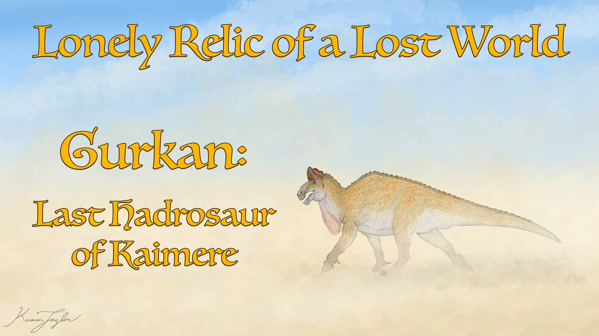
The western and northern portions of the Houze Prairie transition toward increasingly arid conditions. Houze grass is sufficiently resilient to occupy much of this environment, covering areas that might otherwise develop into extensive dune systems or bare desert. Its dominance therefore produces a distinctive landscape that is grass-covered despite climatic conditions that would ordinarily favor much more open and barren terrain.
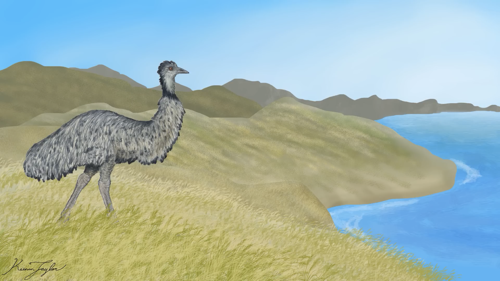
The Arvelith Highlands also support steppe environments, particularly on their poleward and leeward sides. These are referred to by Kaimerans as the cold highlands of Arvel. Despite their relatively low temperatures, they are generally temperate rather than polar environments. Their climate is influenced by the absence of warm maritime winds and the effects of colder surrounding waters, particularly in the northern portions of the range. The highland steppes are not especially productive compared with the humid lowlands. Their shorter growing seasons, colder conditions, and limited moisture restrict vegetation growth. Nevertheless, they support characteristic plant and animal communities adapted to open environments and substantial seasonal variation.
Tropical Monsoon Enviroments
The tropical monsoon climate is the most extensive terrestrial biome type in Kaimere and forms a major component of the Known World's ecology. These environments remain warm throughout the year but experience pronounced seasonal fluctuations in precipitation.
The dry season is often hot and arid, while the wet season brings considerable rainfall. The resulting environmental cycle supports ecosystems that must tolerate both prolonged periods of water limitation and brief intervals of intense precipitation.
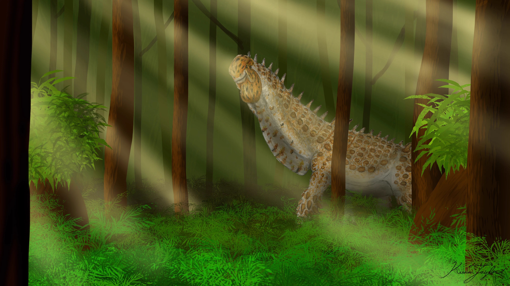
The Titan Gardens of Arvel are among the most distinctive ecosystems associated with this climate. These are open-canopy woodland environments maintained in part by the activities of immense herbivores. Rather than forming dense, continuous forests, the vegetation develops as a mosaic of open woodland, groves, and more sparsely vegetated areas. Large herbivores help maintain this structure by feeding upon vegetation, disturbing the soil, and creating openings in the canopy. Gymnosperms are particularly important components of these ecosystems. Their growth forms and seasonal adaptations provide resources that are exploited by large herbivores, while the open structure of the woodland allows substantial movement by animals of immense size. The Titan Gardens consequently represent an ecological relationship in which vegetation and megafauna jointly maintain the structure of the habitat. Although the wet season can temporarily produce conditions that are wetter than some large herbivores prefer, water does not necessarily remain on the surface for extended periods. Much of the rainfall is diverted through river systems or consumed by vegetation, allowing the landscape to return relatively rapidly to its seasonal conditions.
A substantial portion of the Houze Prairie also falls within the tropical monsoon climatic category. For much of the year, the region is hot and comparatively dry, conditions well suited to Houze grass. The wet season, however, produces a dramatic transformation. An opening in the Silverback Mountains allows warm atmospheric currents and intense storms to penetrate the interior. These seasonal weather systems deliver exceptional amounts of precipitation over a relatively short period. Large areas of the prairie become saturated, and some regions are temporarily converted into shallow wetlands extending across the grassland.

The rainfall also contributes to the hydrological systems of the surrounding Telmede mountains. Water flows into the highlands before descending through rivers and drainage networks, eventually supplying the Seredic Wetlands and the Crescent Sea. The resulting seasonal flooding is essential to the productivity of the interior landscape.
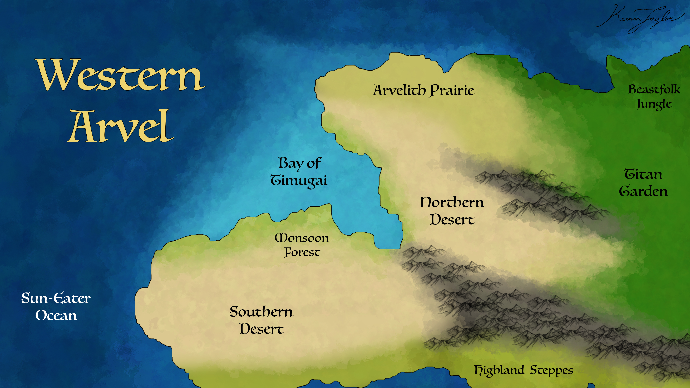
The western coast of Arvel also contains regions influenced by seasonal reversals in wind direction. During these periods, changes in atmospheric circulation bring sufficient moisture inland to support localized forests. These environments are important exceptions to the more arid conditions that characterize much of western Arvel.
Desert Environments
True deserts are comparatively rare within the Known World. Much of the region that would otherwise be expected to develop extensive desert landscapes is occupied by drought-resistant grasses or seasonal scrub vegetation.
The western reaches of Arvel are a major exception. Beyond the more productive grasslands, an immense deserts extends for approximately 2,000 miles toward the western coast. Its landscape is dominated by extensive dunes and sparsely vegetated ground, with biological productivity strongly limited by the scarcity of reliable rainfall. The desert is not entirely devoid of vegetation. Tropical storms occasionally penetrate the prevailing atmospheric barriers, producing brief periods of substantial rainfall. These events transform portions of the otherwise barren landscape into productive scrubland, allowing vegetation to flourish temporarily and providing opportunities for animals adapted to highly variable resource availability.
The fauna of these environments must tolerate long periods of restricted food and water. Many species are consequently adapted to exploit short-lived periods of abundance, taking advantage of vegetation growth and the temporary availability of water before the return of arid conditions.
Temperate Environments
The temperate climates of the Known World are concentrated primarily on peninsulas and islands. Unlike many continental regions on Earth, the Known World does not possess an extensive humid continental climatic zone. Its temperate environments are predominantly maritime or coastal, and their development is strongly influenced by surrounding ocean currents.
Four broad climatic expressions are particularly important: Mediterranean, humid subtropical, oceanic, and temperate rainforest environments. These occur principally in the southern islands, the Free States, Qajarith territories, and Pakardia, although their distribution varies with elevation, coastal orientation, and exposure to ocean currents.
Mediterranean Environments
Mediterranean climates are widespread across the Khalin islands, the Free-States, and parts of Pakardia. These environments experience hot, dry summers and comparatively cool, wetter winters. Rainfall is limited and seasonal, encouraging the development of vegetation adapted to water shortages.
The characteristic vegetation consists of hardy shrubs, grasses, and mosaic forests. Rather than supporting extensive continuous woodland, these landscapes are generally characterized by a combination of scrubland, open forest, and more densely vegetated areas where local conditions permit greater moisture retention.
The seasonal availability of water influences both natural vegetation and agricultural productivity. Many native plants possess adaptations that allow them to survive extended periods of drought, while agricultural crops cultivated in these environments are often selected for durability and longevity.
Mediterranean climates are among the most important agricultural environments of the southern Known World. Their soils and seasonal patterns support grains that can remain productive over multiple years, making them valuable centers of cultivation. Their relatively mild winters and dry summers also make them attractive for permanent settlement compared with many of the more hazardous tropical environments.
Humid Subtropical Environments
Humid subtropical climates occur particularly near warm ocean currents and in coastal regions where prevailing winds carry moisture inland. These environments experience substantial summer precipitation and relatively mild winters.
Although their annual rainfall may be considerable, the soils of humid subtropical environments are generally less nutritious than those of Mediterranean regions within the Known World. Their vegetation and agricultural systems therefore differ, supporting crops adapted to greater summer moisture and the particular characteristics of the local soils. The combination of warm summers, mild winters, and dependable seasonal rainfall makes these environments suitable for dense settlement. Together with Mediterranean climates, they support substantial populations in the Khalin islands, the Free-States, and the surrounding coastal territories.
Their importance to human settlement is amplified by the marine productivity of nearby waters. Cool offshore currents and seasonal upwellings create rich fishing grounds, supplementing agricultural production and providing a reliable source of food for coastal communities.
Oceanic Climates and Temperate Rainforests
Oceanic climates are particularly common in northern Pakardia, north of its principal mountain range, and occur in parts of the southern islands. These environments are characterized by relatively mild temperatures, warm summers, cool winters, and rainfall distributed through much of the year.
The maritime influence prevents the development of extreme seasonal temperatures. Rainfall is generally dependable, and the surrounding vegetation often forms dense forests. In northern Pakardia, these conditions support extensive temperate woodland and rainforest environments.
The southern coast of Pakardia is particularly notable for its temperate rainforest. Its vegetation benefits from the region's maritime climate and the substantial water resources associated with the Pakardiant Great Lakes. However, cold offshore currents periodically influence the coastal environment, reducing atmospheric moisture and producing intervals of comparatively dry conditions.
Northern Pakardia experiences far less risk of drought. Its dependable rainfall and extensive freshwater systems create a relatively stable environment for forest communities. The combination of high precipitation, lake systems, and temperate conditions supports some of the most substantial forests in the Known World. These forests are also notable for their exceptional trees. Pakardia possesses old-growth trees capable of reaching approximately 100 meters in height, even in the absence of giant herbivores. The regional climate and ecological conditions allow trees to attain sizes that are uncommon elsewhere on Kaimere.
Pakardia's resident titanosaurs tend to avoid many of the lowland environments where the Pakardiant Confederacy is concentrated. This contributes to the relative suitability of these areas for permanent settlement, although it is not the sole reason for the distribution of the Confederacy's population. The reduced frequency of enormous herbivores moving through agricultural settlements is nevertheless a considerable advantage, particularly in a region where titanosaurs are capable of damaging walls and consuming cultivated crops.
06 · Melting Pot of Kaimere
Ecological Diversity and Competition

The Known World possesses the most diverse ecosystem on Kaimere, but its biological richness is accompanied by an unusually high degree of ecological competition. The region's position within the historical range of the Great Portal has subjected it to repeated introductions of Earth-derived organisms over millions of years. Successive harvests have introduced organisms from different geological periods and geographical regions, producing an unusual accumulation of evolutionary lineages.
The absence of the end-Cretaceous asteroid impact on Kaimere means that dinosaurs remained important components of the planet's ecosystems even as later mammalian groups developed and diversified. Subsequent harvests introduced numerous Cenozoic organisms, including horses, lions, and humans, which entered an environment already occupied by established dinosaurian communities.
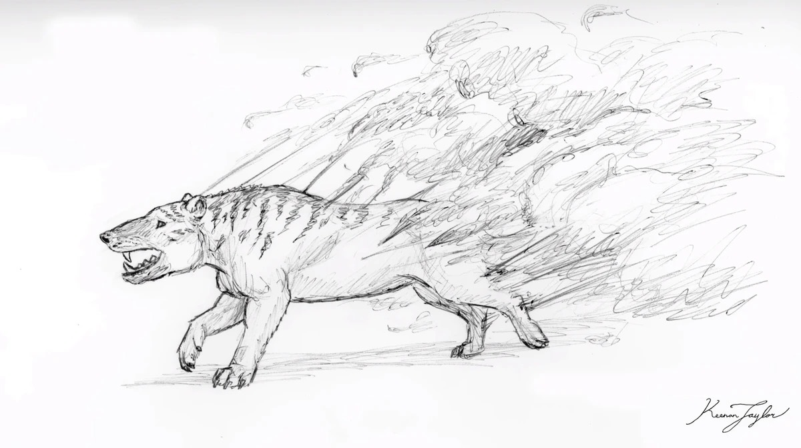
These introductions did not occur in isolation. New organisms encountered existing predators, competitors, parasites, and environmental conditions that differed considerably from those of their original habitats. Some lineages became highly successful, while others declined or disappeared. The result is a complex pattern of ecological sorting, in which survival depends upon the ability to exploit particular resources, tolerate the prevailing climate, and compete with organisms that may have no close equivalent in the species' original environment.
The Known World is particularly competitive because of the concentration of successive Portal harvests. Its ecosystems contain an unusual variety of organisms whose ecological requirements may overlap. Predators must contend with diverse prey communities and competing carnivores, while herbivores encounter extensive competition for vegetation and access to favorable feeding grounds.
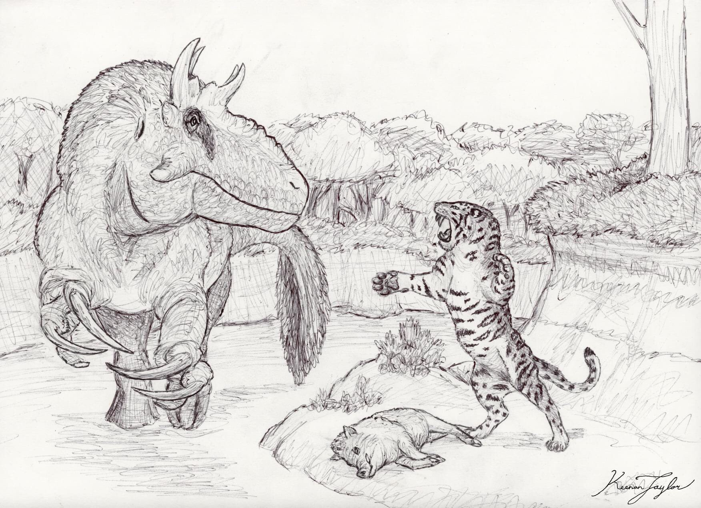
The presence of large dinosaurs remains a defining characteristic of the regional fauna. They continue to occupy many of the largest terrestrial herbivore and predator niches, although mammals have achieved substantial success in several environments. The Known World is therefore not simply a region in which mammals have replaced dinosaurs. It is a complex mixture of long-established dinosaurian lineages and comparatively recent mammalian arrivals.
Mammals are particularly successful in the Known World because of the range of environments available and the repeated introduction of new mammalian groups. Dense forests provide habitats for numerous smaller mammals, while open grasslands and seasonal woodlands support a variety of larger herbivores and their predators. Coastal and island ecosystems have also provided opportunities for the diversification of forms that are less successful in the continental interior.
Humans occupy an especially important position among the region's mammals. Their ability to manipulate landscapes, establish settlements, cultivate crops, and develop organized systems of defense has allowed them to exploit environments that would otherwise be difficult to occupy. Their success is not simply a consequence of intelligence or cultural organization, but also of the geographical advantages of the Known World and the availability of agricultural environments capable of supporting dense populations.
07 · Civilization in the Known World
Human Settlement and Agricultural Geography
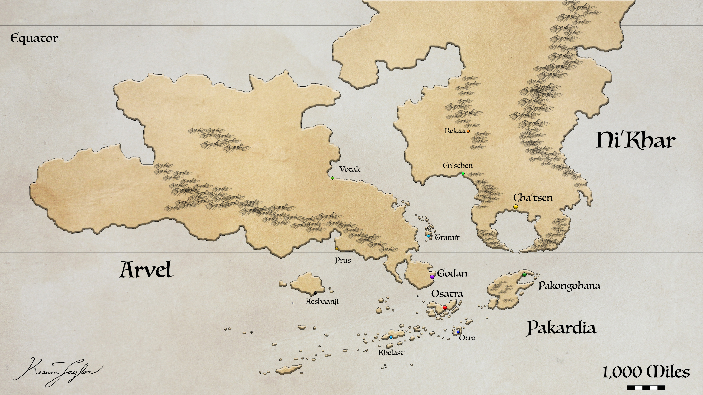
The concentration of Kaimeran civilization within the Known World is primarily a consequence of its relative environmental suitability. Although dangerous animals and hostile forms of magic remain present, the region is comparatively sheltered from the most severe natural conditions found elsewhere on Kaimere.
The surrounding oceans are frequently affected by powerful storms, and many regions beyond the Known World experience more extreme climatic conditions, less predictable water supplies, or particularly dangerous animal communities. By comparison, the Inland Sea and its surrounding coastlines provide a relatively calm and accessible environment. Its shallow waters facilitate maritime travel, while the surrounding landmasses offer a range of ecological conditions suitable for agriculture and permanent settlement.
The region's soils are particularly important. Millennia of cultivation have produced agricultural landscapes more favorable to sustained production than many of the soils found in the less-developed territories beyond the Known World. This is critical to Kaimeran civilization because its inhabitants possess an enchanted metabolism that substantially increases their caloric requirements.
A Kaimeran with the same general lifestyle as an ordinary human requires approximately twice the caloric intake. Their prolonged lifespan and slow development therefore come with considerable nutritional demands. Agricultural systems must maintain high and dependable production to support large populations, particularly in urban settlements.
Their crops also possess an unusual sensitivity to soil conditions. Enchanted crops require carefully optimized soils to develop and produce reliably. This creates a strong relationship between agricultural success and the long-term management of cultivated land. Regions with poor soils, unreliable rainfall, or unfavorable ecological conditions are considerably more difficult to exploit.
The Known World's combination of suitable soils, established agricultural landscapes, freshwater systems, and relatively dependable climatic conditions allows Kaimeran communities to maintain the production necessary for large populations. The concentration of settlements is therefore not simply a matter of historical preference. It reflects the considerable environmental advantages offered by the region.
The temperate regions of the southern islands, the Free States, and Pakardia are particularly attractive for permanent settlement. Their milder climates, agricultural opportunities, and access to productive marine waters provide a comparatively stable foundation for dense populations. Tropical and monsoon environments also support extensive settlements, although their seasonal extremes and larger dangerous fauna can make them more challenging to inhabit.
Kaimerans have consequently shaped the Known World to their advantage. Cultivation, settlement, and the modification of landscapes have created environments that differ from their original ecological conditions. The agricultural productivity of the region is not solely a natural characteristic but also the result of centuries of human management.
08 · The Sea provides
Maritime Economy and Regional Connectivity
The Trakaiam Sea is central to the economic organization of the Known World. Its sheltered waters and shallow channels provide a maritime corridor connecting the surrounding continental regions and island settlements. The resulting network of coastal routes is essential to the movement of people, agricultural products, manufactured goods, and information.
Maritime transport is particularly important because the surrounding landmasses contain substantial geographical barriers. Mountain ranges, dense tropical forests, seasonal wetlands, and dangerous megafauna can make overland travel difficult. By contrast, the Inland Sea allows comparatively direct movement between many of the region's principal settlements.
The marine ecosystem also provides significant quantities of food. Its extensive seagrass meadows support complex food webs, while seasonal nutrient upwellings produce temporary increases in marine abundance. These seasonal events attract animals and create productive opportunities for fishing communities.
The surrounding islands benefit especially from their access to marine resources. Their agricultural systems are often supplemented by fisheries, allowing populations to exploit both terrestrial and aquatic productivity. This combination is one of the principal reasons the southern islands and nearby coastal territories can support substantial populations despite their comparatively restricted land area.
The Inland Sea also facilitates cultural exchange. Its routes link populations separated by considerable distances, allowing maritime societies to maintain contact despite geographical barriers. This circulation of people and goods contributes to the broader cultural coherence of the Known World, although substantial differences remain between its individual regions.
The comparatively calm waters should not be mistaken for an absence of maritime hazards. Seasonal changes in wind direction, the movement of ocean currents, and the biological abundance of the Inland Sea all influence navigation. Nevertheless, relative to the exposed oceans surrounding the Known World, the Trakaiam Sea remains an unusually accessible and dependable maritime environment.
09 · The Discovery Process
Exploration and the Limits of Knowledge
The Known World is the best-documented region of Kaimere. Its dense population, proximity to the Portal, and long history of contact between its inhabitants and the wider scientific community have made it the principal source of information concerning the planet's ecology, geography, and natural history.
For much of recorded history, knowledge of Kaimere was derived almost entirely from observations within the Known World. The region's established settlements, trade routes, and proximity to the Portal provided opportunities for naturalists, explorers, and scholars to study its organisms and environments. Information about distant territories was comparatively limited and frequently derived from travelers, merchants, and secondhand accounts.
It was not until approximately the early twentieth century that the Assembly began investing substantially in expeditions beyond the Known World. These efforts expanded scientific understanding of the wider planet, but the surrounding territories remain considerably less thoroughly documented than the central region.
The discrepancy between the Known World and the lands beyond it is therefore partly a consequence of research history. The Known World is not necessarily more diverse or biologically significant than every other region of Kaimere simply because it is better understood. Rather, its natural history has been studied more extensively, allowing scholars to describe its ecological relationships in far greater detail.
Even within the Known World, substantial areas remain poorly explored. The western jungles of Ni'Khar are particularly difficult to survey because of their dense vegetation, dangerous wildlife, and complicated terrain. The Pakardiant highlands remain incompletely documented, while Blackfish Island continues to be associated with unusual fauna and cultural traditions that are not fully understood by outside scholars.
These gaps in knowledge are important when interpreting the Known World's apparent ecological dominance. Its status as the best-documented region should not be confused with a complete understanding of its biodiversity. Many local ecosystems remain poorly surveyed, and new species and biological relationships are still being identified.
The Known World is therefore both the center of Kaimeran scientific knowledge and a region with significant unexplored territory. Its apparent familiarity is relative to the far greater uncertainty surrounding the rest of the planet.